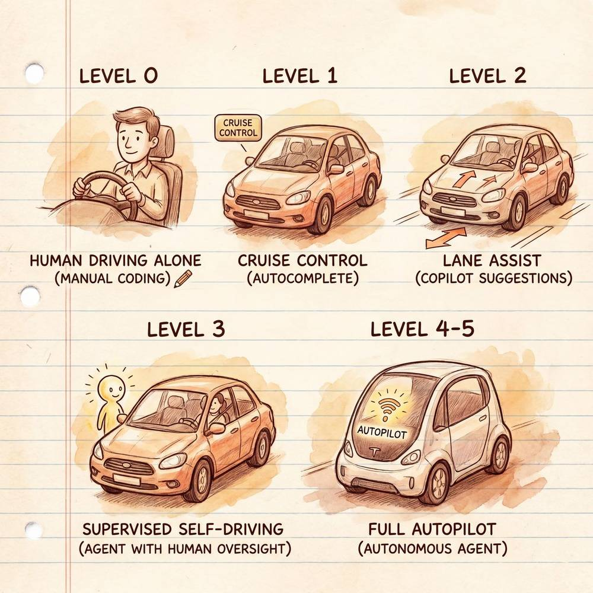
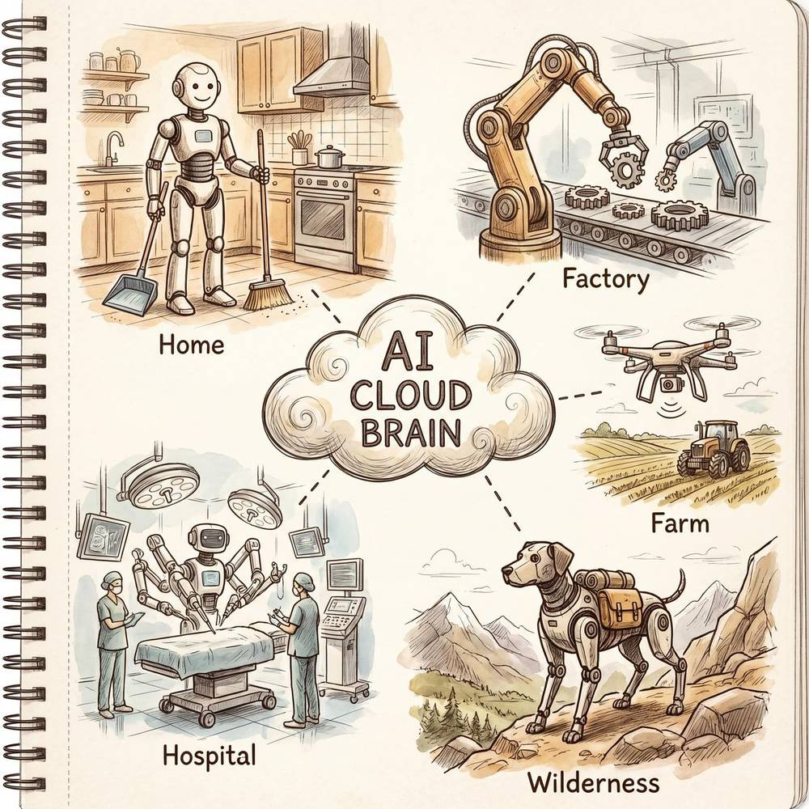
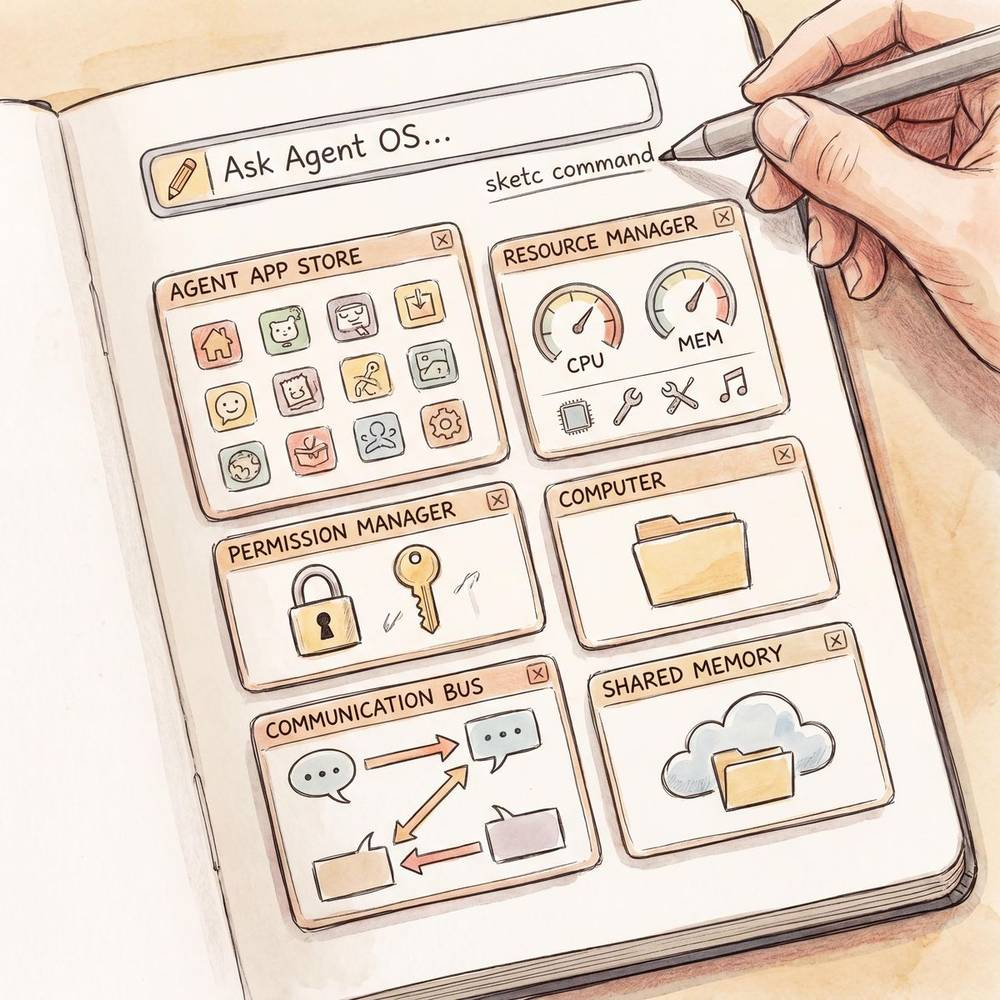

第十章：AI Agent 的未来趋势
"预测未来最好的方式，就是去创造它。" —— Alan Kay
在前面九章中，我们系统地学习了 AI Agent 的概念、架构、工具使用、记忆系统、多智能体协作、安全与评估等核心内容。本章作为全书的收官之章，将把视野拉到更长远的时间尺度——未来 3 到 10 年，AI Agent 将如何演进？它将重塑哪些产业？我们又该如何为此做好准备？
AI Agent 不是一项孤立的技术，它是大语言模型（LLM）、具身智能（Embodied AI）、世界模型（World Model）、操作系统（OS）等多条技术路线交汇的"十字路口"。理解这些趋势之间的关系，比单独掌握某一项技术更为重要。
10.1 从 Copilot 到 Autopilot 的演进
自动化的五个级别
我们可以类比自动驾驶领域的 L0-L5 分级体系，将 AI Agent 的自主程度也划分为五个明确的级别。就像汽车从"完全人类驾驶"走向"完全自动驾驶"需要经历多个阶段一样，AI Agent 从"被动工具"走向"自主协作网络"同样是一个渐进的过程。

| 级别 | 名称 | 定义 | 人类角色 | 代表产品/系统 | 自动驾驶类比 |
|---|---|---|---|---|---|
| L0 - 工具 | Tool | AI 作为被动的执行工具，只在被明确调用时才工作，不具备上下文理解能力 | 完全控制，逐步指令 | 传统 API、SQL 查询、Shell 脚本 | L0：无自动化，人类完全操控 |
| L1 - 助手 | Copilot | AI 能理解上下文，提供建议和补全，但最终决策权在人类 | 审核并采纳建议 | GitHub Copilot、ChatGPT、Claude | L1：辅助驾驶（车道保持） |
| L2 - 半自主 | Semi-Autonomous | AI 能自主规划和执行多步任务，但在关键节点需要人类确认 | 设置目标，审批关键步骤 | Claude Code、Devin、AutoGPT | L2：部分自动驾驶（自适应巡航+转向） |
| L3 - 全自主 | Autopilot | AI 能在明确定义的领域内完全自主地完成复杂任务，仅在异常情况下请求人类介入 | 监督和异常处理 | 未来的专域自主 Agent（自主客服、自主运维） | L3：有条件自动驾驶（特定场景完全自主） |
| L4 - 协作网络 | Agent Network | 多个全自主 Agent 组成协作网络，能跨领域协同工作，自我组织、自我修复 | 治理和价值对齐 | 未来的多 Agent 经济体、DAO+Agent | L4-L5：完全自动驾驶 |
当前处于什么阶段？
截至 2026 年初，行业整体处于 L1 到 L2 的过渡期。以 GitHub Copilot 为代表的 L1 产品已经大规模普及，而 Claude Code、Cursor Agent、Devin 等 L2 级产品正在快速迭代。L3 级别的全自主 Agent 在客服、数据分析等垂直场景中开始出现原型。
关键挑战
从 L2 向 L3 跨越是当前最关键的"鸿沟"。这不仅是技术问题，更涉及信任、安全和治理：
- 可靠性：Agent 需要在 99.9% 以上的情况下做出正确决策，而不是当前的 70-80%
- 可观测性：人类需要能理解 Agent 为什么做了某个决策
- 可回滚性：Agent 的操作必须能够安全回退
- 边界感知：Agent 需要知道自己"不知道什么"，在超出能力范围时主动停止
类比理解：就像自动驾驶从 L2 到 L3 的跨越被称为"最难的一步"——因为从"人类随时准备接管"到"AI 独立运行"意味着责任主体的根本转移——AI Agent 的 L2 到 L3 跨越面临同样的挑战。
10.2 具身智能（Embodied AI）
什么是具身智能？
具身智能是指将 AI 的认知能力赋予物理实体（机器人、无人机、智能硬件等），使其能够感知物理世界、理解物理规律、并在真实环境中自主行动。如果说前面章节讨论的 Agent 都是"云端大脑"，那么具身智能就是给这颗大脑装上了"眼睛、耳朵和四肢"。
核心类比：具身智能 = Agent 从云端走进现实世界。
之前的 AI Agent 操作的是数字世界——调用 API、编写代码、搜索网页。而具身智能的 Agent 操作的是物理世界——拿起杯子、打开门、在仓库中穿行。
五个关键研究方向
1. 机器人基础模型（Robot Foundation Model）

就像 GPT 是文本的基础模型、DALL-E 是图像的基础模型一样，业界正在探索能够跨任务、跨机器人形态泛化的机器人基础模型。这类模型不为某一个特定任务训练，而是通过大规模数据学习通用的操作技能。
- Google DeepMind 的 RT-2（Robotics Transformer 2）：将视觉-语言模型直接用于机器人控制，实现了"看到苹果就知道怎么拿"的能力
- Open X-Embodiment：由 Google 牵头的开放数据集项目，汇集了来自 21 个机器人平台的超过 100 万条操控轨迹数据
2. 物理世界理解
Agent 在物理世界中行动，必须理解重力、摩擦力、碰撞等物理概念。这不是通过物理公式编程实现的，而是希望模型通过观察视频和交互数据"隐式地"学会物理直觉。
- 与世界模型（10.4 节）的研究高度相关
- Sora 等视频生成模型展示了一定程度的物理理解能力
3. 灵巧操作（Dexterous Manipulation）
人类的手有 27 个自由度，能完成系鞋带、折纸、弹钢琴等极其精细的动作。让机器人实现类似的灵巧操作是具身智能最大的技术挑战之一。
- Figure 公司的人形机器人 Figure 02 展示了冲咖啡、递物品等灵巧操作
- Tesla 的 Optimus（擎天柱）机器人正在工厂场景中测试分拣和搬运任务
- 挪威公司 1X Technologies 的 NEO 机器人专注于家庭场景的人形服务
4. 导航与探索
Agent 需要在未知环境中自主导航、探索、建图。这不仅包括避障，还包括语义理解——知道"厨房在哪里"、"桌子上有什么"。
- 视觉-语言-动作模型（VLA）是当前的主流框架
- 结合 SLAM（同时定位与地图构建）和大语言模型的方案正在涌现
5. 自然人机交互
具身 Agent 需要能够理解人类的语言指令、手势、表情，并以自然的方式做出反馈。这要求多模态理解能力（语音+视觉+语言）的深度融合。
- 语音交互已经比较成熟（如 GPT-4o 的实时语音）
- 手势理解、情感识别、社交距离感知等方面还处于早期
产业影响
具身智能将首先在以下场景落地：
- 制造业：柔性产线、质检、分拣
- 仓储物流：自主拣货、搬运、包装
- 家庭服务：清洁、烹饪辅助、老人看护
- 危险环境：核电站维护、灾后救援、深海/太空探索
10.3 Agent 操作系统（Agent OS）
为什么需要 Agent OS？
当前的 AI Agent 面临一个根本性问题：每个 Agent 都是一座孤岛。它们各自有不同的工具接口、记忆格式、通信协议。这就像个人电脑在 DOS 时代的状况——每个应用程序都需要自己管理硬件驱动、内存分配、文件系统。
核心类比：Agent OS 之于 AI Agent，就像 Windows/macOS 之于个人电脑——从 DOS 到 Windows 的飞跃。
操作系统的出现统一了硬件抽象、进程管理、文件系统、用户界面等基础设施，让开发者可以专注于应用逻辑。同样，Agent OS 的目标是为 AI Agent 提供一套标准化的运行环境和基础设施，让 Agent 的开发、部署、协作、治理变得简单和规范。
五大核心特性
1. 调度与编排（Scheduling & Orchestration）

就像操作系统的进程调度器一样，Agent OS 需要管理多个 Agent 的并发执行、优先级分配、资源调度和生命周期管理。
- 支持 Agent 的启动、暂停、恢复、终止
- 根据任务优先级和资源约束进行智能调度
- 处理 Agent 之间的依赖关系和执行顺序
- 支持容错和故障恢复——某个 Agent 崩溃时自动重启或转移任务
2. 统一工具接口（MCP - Model Context Protocol）
Anthropic 提出的 MCP 协议正在成为 Agent 连接外部工具的事实标准。它的定位类似于操作系统中的"设备驱动程序接口"——应用不需要知道打印机的具体型号，只需调用统一的打印 API。
- 标准化的工具发现和描述机制
- 统一的输入输出格式
- 安全的权限和认证框架
- 目前已获得 OpenAI、Google 等主要厂商支持
3. 权限与安全（Permission & Security）
Agent OS 必须实现精细化的权限控制，就像操作系统区分管理员和普通用户一样：
- 能力权限：Agent 能调用哪些工具？能访问哪些数据？
- 操作权限：Agent 能否执行不可逆操作（如删除文件、发送邮件、转账）？
- 范围权限：Agent 的操作范围限制（只能操作某个目录、某个数据库）
- 审计日志：所有 Agent 操作的完整记录，支持事后审计和回溯
4. 记忆管理（Memory Management）
就像操作系统管理 RAM 和硬盘一样，Agent OS 需要管理 Agent 的多层次记忆：
- 工作记忆（类比 RAM）：当前任务的上下文，速度快但容量有限
- 长期记忆（类比硬盘）：历史经验、用户偏好、知识积累
- 共享记忆（类比网络文件系统）：多个 Agent 之间共享的知识和状态
- 支持记忆的索引、检索、更新、过期和垃圾回收
5. Agent 间通信（Inter-Agent Communication）
多个 Agent 协作时需要高效的通信机制，类似操作系统中的进程间通信（IPC）：
- 消息传递：Agent 之间的异步消息队列
- 共享状态：多个 Agent 可以读写的公共状态空间
- 事件广播：某个 Agent 完成任务后通知其他相关 Agent
- 协商协议：Agent 之间的任务分配和冲突解决机制
当前进展
- Anthropic 的 MCP 在工具接口层面已经取得了显著进展
- LangGraph 和 CrewAI 提供了 Agent 编排的初步框架
- 微软的 AutoGen 在多 Agent 通信方面做了大量探索
- 真正完整的 Agent OS 目前还不存在，但各个模块正在快速发展
10.4 世界模型与 Agent 的结合
什么是世界模型？
世界模型（World Model）是指 AI 系统内部对外部世界运行规律的一种压缩表示。它能让 AI 在不真正执行动作的情况下，预测动作的后果。
核心类比：人在做决定之前，会在脑中模拟后果——"如果我说了这句话，对方会怎么反应？""如果我走这条路，大概需要多久？"这种脑中的模拟器，就是人类的世界模型。
为什么 Agent 需要世界模型？
当前 Agent 的一个核心瓶颈是试错成本过高。Agent 执行一个多步任务时，如果中间某步出错，可能需要回退整个流程重来。在数字世界中这可能只是浪费时间和 Token，但在物理世界中（比如机器人操作），试错可能造成设备损坏甚至人员伤害。
世界模型可以让 Agent 在"心理空间"中先模拟和评估不同的行动方案，选择最优路径后再真正执行。具体来说：
- 减少试错次数：在模拟中排除明显不可行的方案
- 提升规划质量：通过多步前瞻预测，选择长期收益最大的路径
- 增强安全性：在执行前预判危险操作，提前预警
- 加速学习：通过模拟生成大量训练数据，而不依赖真实世界的交互
四个重要研究方向
1. 视频生成模型作为世界模拟器（Sora 路线）
OpenAI 的 Sora 不仅是一个视频生成工具，它暗示了一种可能性：通过大规模视频训练，AI 可以学会物理世界的运行规律。如果将 Sora 类模型与 Agent 的决策系统结合，Agent 就能在"想象"中预演自己的行动效果。
- 给 Agent 一个指令"把杯子放到桌子上"
- 世界模型在内部生成这个动作的"视频预演"
- Agent 评估预演结果是否符合预期，再决定是否执行
当前挑战：视频生成模型的物理一致性还不够可靠（比如物体会穿模），且计算成本极高。
2. 基于物理引擎的世界模型
另一种思路是将传统的物理引擎（如 NVIDIA 的 Omniverse、Unity Physics）与 AI 结合，构建可微分的物理模拟器。
- 优势：物理规律严格准确
- 劣势：难以覆盖所有真实世界的复杂性（如柔性物体、流体）
- 中间路线：用物理引擎处理刚体力学，用神经网络补充物理引擎无法覆盖的部分
3. 因果推理与世界模型
Judea Pearl 提出的因果推理（Causal Reasoning）框架为世界模型提供了理论基础。一个真正理解世界的 AI 不仅需要知道"A 和 B 相关"，还需要知道"A 导致了 B"以及"如果干预 A 会怎样"。
- 因果模型让 Agent 能回答反事实问题："如果我当时没有发送那封邮件，结果会怎样？"
- 这对 Agent 的规划、调试和自我改进都至关重要
- 当前的 LLM 具备一定的因果推理能力，但还远不完善
4. 概念化与抽象表示
人类的世界模型并不是像素级别的精确模拟，而是高度抽象和概念化的。我们思考"把杯子放到桌子上"时，脑中不会渲染一个 4K 视频，而是操作"杯子"和"桌子"这样的抽象概念。
- 构建基于概念（而非像素）的世界表示
- 支持组合性推理——把已知概念组合成新场景
- 与认知科学的"心智模型"理论高度相关
- 这可能是实现高效世界模型的关键路径
10.5 AGI 之路：Agent 的角色
Agent 是通往 AGI 的关键路径
通用人工智能（AGI）的目标是创造能在几乎所有认知任务上达到或超越人类水平的 AI 系统。当前的共识越来越明确：AGI 不会仅仅是一个更大的语言模型，而必须是一个能够感知、推理、规划、行动和学习的 Agent 系统。
语言模型提供了"大脑"，而 Agent 架构提供了"手脚"和"执行力"。AGI 需要的不仅是"知道"，还要"能做到"。
里程碑进展
| 阶段 | 能力标志 | 状态（2026年） | 代表性成果 |
|---|---|---|---|
| 文本理解与生成 | 能通过图灵测试级别的对话 | ✅ 已实现 | GPT-4、Claude 3.5、Gemini |
| 多模态理解 | 理解文本+图像+音频+视频 | ✅ 已实现 | GPT-4o、Gemini Ultra |
| 工具使用与 API 调用 | 能自主调用外部工具完成任务 | ✅ 已实现 | Function Calling、MCP |
| 多步推理与规划 | 分解复杂问题并制定执行计划 | ✅ 基本实现 | Chain-of-Thought、ReAct |
| 自主编程 | 独立完成完整的软件开发任务 | 🔄 进行中 | Claude Code、Devin |
| 科学研究辅助 | 提出假说、设计实验、分析数据 | 🔄 进行中 | AlphaFold 3、AI Scientist |
| 持续学习 | 从经验中不断改进而无需重新训练 | 🔄 早期阶段 | Voyager（Minecraft Agent） |
| 物理世界操作 | 在真实环境中灵巧操作物体 | 🔄 早期阶段 | Figure 02、RT-2 |
| 跨领域迁移 | 在一个领域学到的能力自动迁移到其他领域 | 🔮 远期目标 | 尚无突破性进展 |
| 自我认知与元推理 | 准确评估自身能力的边界 | 🔮 远期目标 | 初步研究阶段 |
| 社会协作 | 在复杂社会环境中与人类及其他 Agent 协作 | 🔮 远期目标 | Multi-Agent 系统原型 |
五大关键挑战
1. 可靠性与一致性
当前 Agent 的最大问题不是"能不能做到"，而是"能不能每次都做到"。一个编码 Agent 可能 80% 的情况下写出正确的代码，但剩下的 20% 可能引入严重 Bug。AGI 级别的 Agent 需要接近 100% 的可靠性，至少在其声称有能力的领域内如此。
2. 长期记忆与持续学习
人类的智能是通过一生的经验积累形成的。当前的 Agent 每次对话结束后，大部分上下文就丢失了。虽然 RAG 和长期记忆系统有所缓解，但距离真正的"终身学习"还有很大差距。Agent 需要能够从成功和失败中持续学习，而无需人工干预。
3. 价值对齐与安全
随着 Agent 自主性的增强，确保它们的行为符合人类的价值观和意图变得至关重要。这不仅包括"不做坏事"，还包括在模糊和矛盾的指令面前做出合理的判断。对齐问题在自主 Agent 中比在对话模型中复杂得多——因为 Agent 的行动会产生真实世界的后果。
4. 效率与成本
当前运行一个复杂的 Agent 任务（如让 Devin 完成一个软件项目）可能需要消耗数十美元甚至上百美元的 API 费用。如果 Agent 要大规模普及，成本必须降低 1-2 个数量级。这需要在模型推理效率、缓存策略、轻量级 Agent 设计等方面取得突破。
5. 评估与基准
我们还缺乏全面评估 Agent 能力的标准化基准。现有的 benchmark（如 SWE-Bench、WebArena）覆盖的场景有限，且容易被"应试式"优化。我们需要更接近真实世界复杂度的评估体系，以及衡量 Agent 长期表现的方法。
对 AI 从业者的建议
- 拥抱 Agent 思维：不要只把 AI 当作模型来研究，要把它当作能行动的系统来设计
- 重视工程能力：AGI 不仅需要算法突破，更需要扎实的系统工程来支撑复杂的 Agent 架构
- 关注安全与对齐：这不是"锦上添花"的工作，而是 Agent 能否真正被部署的关键前提
- 跨学科学习：认知科学、控制论、博弈论、经济学等学科的知识将越来越重要
10.6 Agent 经济与新职业
Agent 催生的新经济生态
AI Agent 的普及不仅是一次技术革命，更是一次经济结构的重塑。当 Agent 能够自主完成越来越多的任务时，人类的工作将从"亲自执行"转向"设计、监督和治理 Agent"。这不是简单的"AI 取代人类工作"——而是一种全新的人机分工模式。
新兴职业
1. Agent 设计师（Agent Designer）
负责设计 Agent 的人格、行为模式、决策逻辑和交互体验。这个角色融合了产品设计、心理学和 AI 工程的技能。
- 定义 Agent 的"性格"——是严谨审慎还是创意灵活？
- 设计 Agent 在不同场景下的行为策略
- 优化人类与 Agent 的协作体验
- 类似于今天的 UX 设计师，但设计的对象从界面变成了智能行为
2. Agent 训练师（Agent Trainer）
通过对 Agent 的输出进行反馈、纠正和标注，帮助 Agent 持续提升表现。这是 RLHF（人类反馈强化学习）在 Agent 场景下的自然延伸。
- 评估 Agent 的任务执行质量
- 提供示范性的任务完成路径
- 识别和标注 Agent 的典型错误模式
- 构建高质量的 Agent 训练数据集
3. Agent 安全审计员（Agent Security Auditor）
随着 Agent 获得越来越多的权限（访问数据库、发送邮件、操作代码仓库），安全审计变得至关重要。
- 审查 Agent 的权限配置是否符合最小权限原则
- 测试 Agent 在对抗性输入下的行为（Prompt Injection、越狱攻击等）
- 建立 Agent 操作的审计日志和合规体系
- 评估 Agent 系统的整体安全风险
4. Agent 编排师（Agent Orchestrator）
负责设计和管理多 Agent 系统的协作流程，类似于今天的 DevOps 工程师，但管理的对象从服务器变成了 Agent。
- 设计多 Agent 的协作拓扑和通信协议
- 优化任务分配和负载均衡
- 监控 Agent 系统的运行状态和性能
- 处理 Agent 之间的冲突和异常
5. 领域知识工程师（Domain Knowledge Engineer）
将特定领域的专业知识转化为 Agent 可以利用的结构化知识，让通用 Agent 具备领域专家的能力。
- 构建领域知识图谱和规则库
- 设计领域特定的评估标准
- 将隐性的专家经验显性化、可计算化
- 持续维护和更新领域知识库
6. 人机协作顾问（Human-AI Collaboration Consultant）
帮助企业设计人类员工与 AI Agent 的最优协作模式。
- 分析企业工作流中哪些环节适合引入 Agent
- 设计人与 Agent 的职责划分和交接流程
- 培训员工如何有效地与 Agent 协作
- 评估人机协作的效率和体验
对个人的建议
- 学会"指挥" Agent：与 Agent 协作将成为一项基础技能，如同今天的"使用搜索引擎"
- 培养不可替代的能力：创造力、同理心、跨领域判断力、伦理决策能力——这些是 Agent 最难替代的人类能力
- 成为"人机翻译者"：能够将人类的模糊需求转化为 Agent 可执行的清晰指令，将 Agent 的输出转化为对人类有意义的洞察
- 保持终身学习：Agent 技术的发展速度极快，半年前的最佳实践可能已经过时
对企业的建议
- 制定 Agent 战略：将 AI Agent 纳入企业的数字化转型规划，而不是将其视为一项IT工具
- 建立 Agent 治理框架：明确 Agent 的权限边界、审批流程、审计机制
- 投资人才转型：帮助现有员工掌握与 Agent 协作的技能，而不是简单地用 Agent 替代员工
- 从小场景开始：选择风险可控、价值可衡量的场景先行试点，积累经验后再扩展
10.7 对学习者的行动建议
现在应该学什么？
AI Agent 是一个高速发展的领域，学习的关键不是"把所有技术都学一遍"，而是建立正确的知识框架，并在框架内持续更新具体技术。
第一层：基础能力（必备）
- 大语言模型原理：Transformer 架构、注意力机制、预训练与微调、提示工程
- Python 编程：至少达到中级水平，能熟练使用 async/await、装饰器、类型提示
- API 设计与使用：RESTful API、WebSocket、认证与授权
- 基础系统知识：Linux 基础、Docker 容器、Git 版本控制
第二层：Agent 核心技术（重点深入）
- Agent 架构模式：ReAct、Plan-and-Execute、Reflexion、Tree of Thoughts
- 工具使用与 MCP：理解 Function Calling、MCP 协议、工具描述与安全
- 记忆系统：向量数据库、RAG 架构、长短期记忆管理
- 多 Agent 系统：Agent 通信、协调、冲突解决
第三层：前沿方向（选择性关注）
- 具身智能：如果对机器人或硬件感兴趣
- 世界模型：如果对基础研究感兴趣
- Agent 安全：如果对安全和治理感兴趣
- Agent 经济学：如果对商业应用感兴趣
推荐学习资源
经典论文（必读）
| 论文 | 主题 | 重要性 |
|---|---|---|
| ReAct: Synergizing Reasoning and Acting in Language Models (Yao et al., 2023) | Agent 推理与行动的统一框架 | ⭐⭐⭐⭐⭐ |
| Toolformer: Language Models Can Teach Themselves to Use Tools (Schick et al., 2023) | 自学使用工具的语言模型 | ⭐⭐⭐⭐⭐ |
| Generative Agents: Interactive Simulacra of Human Behavior (Park et al., 2023) | 生成式 Agent 模拟社会行为 | ⭐⭐⭐⭐⭐ |
| Voyager: An Open-Ended Embodied Agent with LLMs (Wang et al., 2023) | 开放世界中持续学习的 Agent | ⭐⭐⭐⭐ |
| A Survey on Large Language Model based Autonomous Agents (Wang et al., 2023) | Agent 综述 | ⭐⭐⭐⭐ |
| RT-2: Vision-Language-Action Models (Brohan et al., 2023) | 具身智能基础模型 | ⭐⭐⭐⭐ |
| World Models (Ha & Schmidhuber, 2018) | 世界模型经典论文 | ⭐⭐⭐⭐ |
主流框架（动手实践）
- LangChain / LangGraph：最流行的 Agent 开发框架，社区活跃，文档丰富
- CrewAI：多 Agent 协作框架，上手简单，适合快速原型开发
- AutoGen（微软）：多 Agent 对话框架，学术背景深厚
- Anthropic Claude API + MCP：体验最新的工具使用和 Agent 能力
- OpenAI Assistants API：完整的 Agent 开发接口，集成了代码解释器和文件检索
在线课程
- Andrew Ng 的 "AI Agentic Workflows"（DeepLearning.AI）：系统介绍 Agent 设计模式
- LangChain Academy：LangChain/LangGraph 官方教程，由浅入深
- Hugging Face 的 Agent 课程：开源社区的免费课程，实践性强
- Stanford CS224N / CS324：自然语言处理和大语言模型的学术基础
社区与信息源
- Twitter/X：关注 @AndrewYNg、@kaboroevsky、@Harrison Chase、@Anthropic 等账号
- GitHub Trending：每周关注 AI/Agent 相关的热门项目
- arXiv：每天浏览 cs.AI 和 cs.CL 分类的新论文摘要
- Reddit r/LocalLLaMA、r/MachineLearning：社区讨论和实践分享
- 各大公司技术博客：Anthropic Blog、OpenAI Blog、Google AI Blog
学习路线图
第 1-2 个月：打基础
├── 学习 LLM 基础原理（Transformer、注意力、提示工程）
├── 掌握 Python 异步编程和 API 开发
├── 完成第一个简单的 ChatBot
└── 阅读 ReAct 和 Toolformer 论文
第 3-4 个月：构建 Agent
├── 学习 LangChain/LangGraph 框架
├── 实现一个 ReAct 模式的 Agent（搜索+计算+代码执行）
├── 给 Agent 加上记忆系统（向量数据库 + RAG）
├── 学习 MCP 协议并集成外部工具
└── 阅读 Generative Agents 和 Voyager 论文
第 5-6 个月：进阶实战
├── 构建多 Agent 协作系统（如代码评审团队）
├── 实现 Agent 的自我反思和改进能力
├── 学习 Agent 的安全与评估方法
├── 参与开源 Agent 项目贡献
└── 开始关注具身智能或世界模型等前沿方向
第 7-12 个月：深入专精
├── 选择一个细分方向深入研究
├── 构建一个完整的 Agent 应用并开源或发布
├── 撰写技术博客或论文分享你的经验
├── 参加 AI Agent 相关的 Hackathon 或竞赛
└── 建立个人在 Agent 领域的专业影响力写在最后
AI Agent 不是终点，而是起点。
我们正处在一个极其特殊的历史时刻。大语言模型赋予了机器前所未有的理解和推理能力，而 Agent 架构让这些能力能够转化为真实世界的行动。从 Copilot 到 Autopilot，从云端到具身，从单体到网络——AI Agent 的演进将深刻地改变我们的工作方式、生活方式和整个社会的运行模式。
作为学习者和从业者，我们有幸身处这场变革的最前沿。保持好奇心，持续学习，勇于实践，同时不忘思考技术的社会影响和伦理边界——这是我们对未来最好的准备。
这不仅是 AI 的未来，更是我们每个人的未来。
📖 本章小结
- AI Agent 的自主性将从 L1（Copilot）逐步演进到 L4（协作网络），当前处于 L1-L2 过渡期
- 具身智能将让 Agent 从数字世界走进物理世界，机器人基础模型是关键突破方向
- Agent OS 将为 Agent 提供标准化的运行环境，MCP 是统一工具接口的重要里程碑
- 世界模型将赋予 Agent "在脑中模拟后果"的能力，大幅减少试错成本
- Agent 是通往 AGI 的关键路径，可靠性、持续学习和价值对齐是核心挑战
- Agent 经济将催生 Agent 设计师、训练师、安全审计员等新兴职业
- 学习者应建立"基础→核心→前沿"的三层知识框架，边学边做，持续迭代
— AI Agent 全面学习指南 · 第十章 完 —
💡 觉得有帮助？欢迎关注我们
获取更多 AI Agent 学习资料与行业动态
 微信公众号
微信公众号
 小红书
小红书